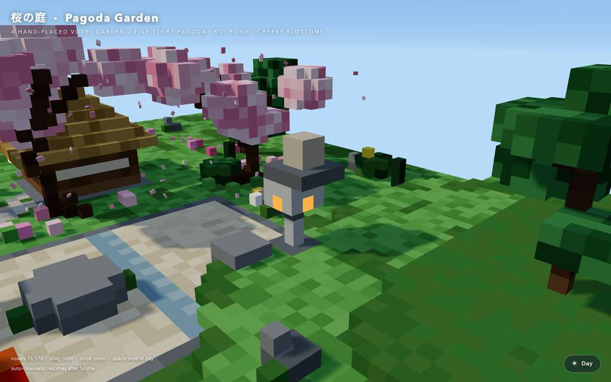
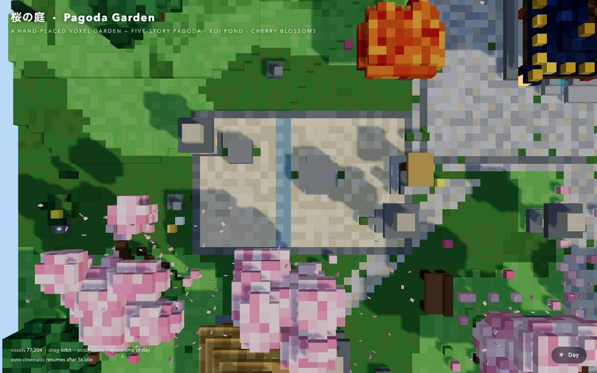
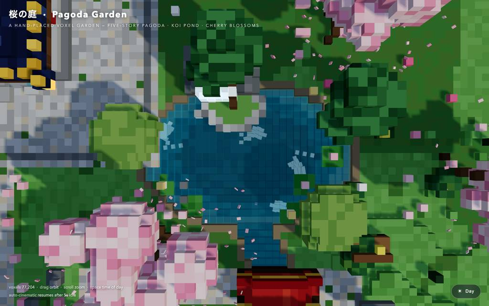
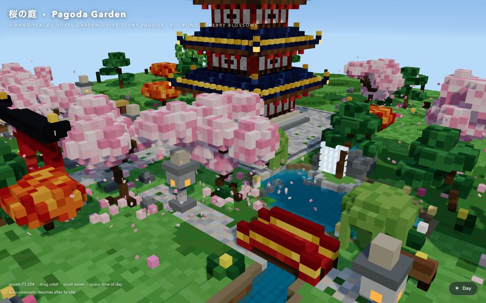
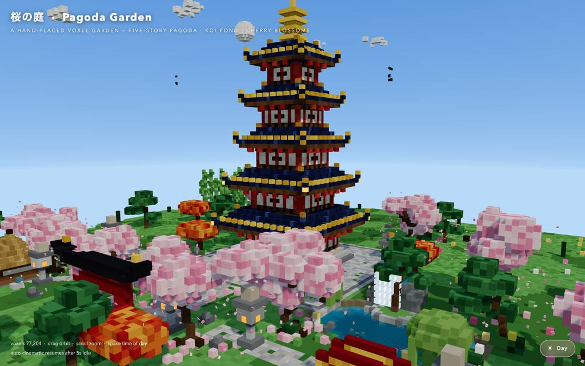
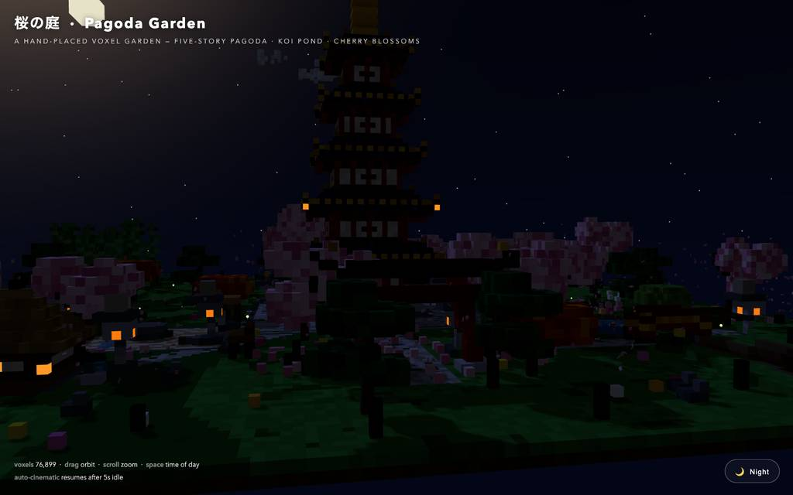

runs / 2026-10-19 / 082728-208000-baseline-db9e06c0
ボクセル庭園の単一HTMLを41分80コールで完成、初稿の全面書き直しを経る
qwen3.8-flash-next-unsloth-ud-q4_k_xl（thinking high）が、voxel 庭園の pagoda-garden.html（45,145 バイト単一ファイル）を 80 コール・2469.9 秒で構築し、exit code 0 で完了した。#4 で初稿を一気に書き出すも #5 の構文チェックで落ち、#6 で全面書き直し、以降はブラウザ検証で昼景・鯉・夜景を反復修正した。最終報告では headless Chromium でコンソールエラーゼロを確認したと述べている。
成果物
work/pagoda-garden.html（45,145 バイト）をそのまま同梱している。重いシーンもあるため、必要なときだけ起動する。
pagoda-garden.html
44 KB · 起動するまで読み込まない












全 18 枚から等間隔に 12 枚を選んでいる。logs/events.jsonl の画像ブロックを内容ハッシュで重複排除して時系列に並べた、制作中の検証用スクリーンショット。最終版とは限らない。
成果物の構成
| 要素 | 内容 |
|---|---|
| 成果物の形式 | pagoda-garden.html 単一ファイル 45KB、Three.js は CDN 読み込み、そのままブラウザで開ける |
| voxel 総数 | 手配置 77,239 ボクセルと報告 |
| 五重塔 | 藍色の多段屋根に金色の鴟尾と風鈴灯、朱の柱と組物、格子窓、内部の金仏と燭光、plank balkon、相輪、二段石基 |
| 樹木 | 桜 9 本（約 760 枚の花弁が散り地面に積もる）、刈り込み松、紅葉の楓、枝垂柳、竹藪 26 本、苔、岩、野花 |
| 水回り | 透明・水深グラデ付き鯉池、岩の滝（落下水と泡）、睡蓮と小島、飛石、蛇行する小川と朱の太鼓橋 |
| 構造物 | 大鳥居と神社、茅葺茶室（夜は障子発光）、枯山水、石灯籠（夜点灯）、石塔、井戸、ベンチ、竹垣 |
| 生命・大気 | 目と背びれ付き鯉 4 尾、鳥の群れ、voxel 雲、星 520、夕暮れ後の蛍 |
| 時間切替と操作 | ゴールデンアワー／月夜プリセット、ドラッグで回転・スクロールズーム・Space で時間切替、待機時の自動カメラ |
| 検証 | headless Chromium で 3 時間帯を読み込み、コンソールエラーゼロとモジュール正常パースを確認と報告 |
モデルの最終メッセージから読み取った内容。コードの確認はしていない。
タイムライン
80 回の API 呼び出しを時間順に並べた。上段の帯の幅が各呼び出しの所要時間で、帯の間の空白がツールの実行時間。下段はその時点のコンテキスト長。
最も長い 2 回の生成（#4 339 秒・#5 323 秒）で 662.0 秒、壁時計の 26.8%。出力トークンの上位 4 回（#4・#6・#5・#1）で全体の 63.1%（72,604 / 115,130）。推論以外（ツール実行など）は約 101 秒（4%）。
フェーズ別の内訳
| フェーズ | 経過 | 所要 | 全体に占める割合 | 呼び出し | 出力 tok | 何をしたか |
|---|---|---|---|---|---|---|
| 初期構築 | 0:00–11:01 | 661 秒 | 26.8% | 4 | 37,861 | ワークスペース確認とブラウザ系ツールのドキュメント読取、todo で計画後、pagoda 庭園の完全な HTML を一書きした。#1 は 304.1 秒で 16,483 トークン、#4 は 338.9 秒で 20,880 トークンを出力。 |
| 書き直し修正 | 11:01–22:40 | 699 秒 | 28.3% | 10 | 37,450 | node の構文チェックで初稿の破損コードを検出し（E3）、全体を再書き込み。続けて buildTorii の noop ループ除去と shrine のネスト配列色選択を small edit で 1 行ずつ直した（E4/E5 を含む）。 |
| 検証開始 | 22:40–24:32 | 111 秒 | 4.5% | 10 | 4,246 | 構文チェック通過後、ブラウザでページを開いてコンソールとスクリーンショットを取得。デバッグ用カメラフック追加時にアンカー拒否（E6）があり、grep で行を再確認して続行した。 |
| 庭の修正 | 24:32–30:35 | 363 秒 | 14.7% | 20 | 15,013 | 西庭園の検査を皮切りに、zen garden の平面化、clobber された palette 復元、芝生の連続패ッチ、水透明度、幹の色、滝の受け池を編集で修正し、リロードと俯瞰スクショで確認した。 |
| 細部調整 | 30:35–34:29 | 234 秒 | 9.5% | 13 | 7,926 | 6 個の todo 完了マーク（43.5 秒）後、芝と波紋のコントラスト調整、鯉 4 尾の目・背びれ・太い色彩での再構築と間隔修正を行った。 |
| 夜景と性能 | 34:29–39:32 | 302 秒 | 12.2% | 15 | 9,310 | 夜モードで提灯の灯り、星・月・泡の発光を追加。フレームレート計測が失敗しリトライとブラウザ健全性確認（#67〜#70）を挟み、月を夜のみフェード表示に修正した。 |
| 最終仕上げ | 39:32–41:09 | 97 秒 | 3.9% | 8 | 3,324 | デバッグカメラフックを除去し voxel 総数を報告値に修正。最終構文チェックとクリーンロードの smoke test、ブラウザタブクローズ、成果物の無傷確認で締めた。 |
フェーズの切れ目は、ログから読み取れる作業内容の変わり目（LLM による区切り）。所要時間は、そのフェーズの最初の呼び出しの開始から次のフェーズの最初の呼び出しの開始まで。
80 回の呼び出しを表で見る
| # | 種別 | フェーズ | 開始 | 所要 秒 | prompt | うち cache | 出力 | tok/s | HTTP | ツール |
|---|---|---|---|---|---|---|---|---|---|---|
| 1 | 主ループ | 初期構築 | 0:00 | 304.1 | 7,804 | 7,624 | 16,483 | 55.6 | 200 | bash + read |
| 2 | 主ループ | 初期構築 | 5:04 | 12.0 | 24,400 | 7,799 | 246 | 52.0 | 200 | todo |
| 3 | 主ループ | 初期構築 | 5:16 | 5.8 | 24,676 | 24,645 | 252 | 49.2 | 200 | todo |
| 4 | 主ループ | 初期構築 | 5:22 | 338.9 | 25,211 | 24,927 | 20,880 | 61.8 | 200 | write |
| 5 | 主ループ | 書き直し修正 | 11:01 | 323.1 | 46,134 | 46,090 | 16,519 | 51.2 | 200 | bash |
| 6 | 主ループ | 書き直し修正 | 16:24 | 318.0 | 62,753 | 46,129 | 18,722 | 60.3 | 200 | write |
| 7 | 主ループ | 書き直し修正 | 21:42 | 12.5 | 81,517 | 62,748 | 218 | 49.1 | 200 | edit |
| 8 | 主ループ | 書き直し修正 | 21:55 | 4.0 | 81,898 | 81,734 | 153 | 49.5 | 200 | read |
| 9 | 主ループ | 書き直し修正 | 21:59 | 12.4 | 83,723 | 82,051 | 624 | 59.0 | 200 | grep |
| 10 | 主ループ | 書き直し修正 | 22:11 | 3.7 | 84,768 | 84,346 | 147 | 56.2 | 200 | read |
| 11 | 主ループ | 書き直し修正 | 22:15 | 12.2 | 85,338 | 84,915 | 563 | 51.0 | 200 | edit |
| 12 | 主ループ | 書き直し修正 | 22:27 | 4.1 | 86,224 | 85,903 | 157 | 51.2 | 200 | edit |
| 13 | 主ループ | 書き直し修正 | 22:32 | 4.9 | 86,525 | 86,381 | 206 | 50.1 | 200 | edit |
| 14 | 主ループ | 書き直し修正 | 22:37 | 3.6 | 86,889 | 86,733 | 141 | 52.7 | 200 | edit |
| 15 | 主ループ | 検証開始 | 22:40 | 3.1 | 87,222 | 87,030 | 133 | 60.8 | 200 | bash |
| 16 | 主ループ | 検証開始 | 22:43 | 4.1 | 87,373 | 87,355 | 181 | 47.5 | 200 | read |
| 17 | 主ループ | 検証開始 | 22:48 | 9.1 | 90,552 | 87,553 | 395 | 55.4 | 200 | eval |
| 18 | 主ループ | 検証開始 | 23:04 | 4.8 | 91,057 | 90,949 | 199 | 49.5 | 200 | eval |
| 19 | 主ループ | 検証開始 | 23:09 | 51.0 | 92,008 | 91,255 | 2,358 | 47.6 | 200 | edit |
| 20 | 主ループ | 検証開始 | 24:00 | 3.8 | 94,521 | 94,365 | 137 | 48.2 | 200 | grep |
| 21 | 主ループ | 検証開始 | 24:04 | 5.1 | 94,865 | 94,660 | 201 | 48.7 | 200 | edit |
| 22 | 主ループ | 検証開始 | 24:09 | 6.1 | 95,204 | 95,066 | 287 | 55.0 | 200 | eval |
| 23 | 主ループ | 検証開始 | 24:21 | 5.2 | 95,677 | 95,490 | 236 | 53.1 | 200 | eval |
| 24 | 主ループ | 検証開始 | 24:27 | 4.4 | 96,713 | 95,912 | 119 | 41.9 | 200 | read |
| 25 | 主ループ | 庭の修正 | 24:32 | 50.5 | 97,337 | 96,833 | 2,354 | 47.8 | 200 | eval |
| 26 | 主ループ | 庭の修正 | 25:23 | 72.8 | 100,491 | 99,690 | 3,396 | 47.7 | 200 | read |
| 27 | 主ループ | 庭の修正 | 26:36 | 15.5 | 104,625 | 103,887 | 704 | 49.7 | 200 | edit + edit |
| 28 | 主ループ | 庭の修正 | 26:52 | 13.7 | 105,957 | 105,329 | 653 | 52.8 | 200 | read |
| 29 | 主ループ | 庭の修正 | 27:05 | 4.9 | 107,297 | 106,610 | 208 | 58.5 | 200 | edit |
| 30 | 主ループ | 庭の修正 | 27:10 | 3.1 | 107,902 | 107,505 | 104 | 50.3 | 200 | edit |
| 31 | 主ループ | 庭の修正 | 27:14 | 8.2 | 108,129 | 108,006 | 371 | 50.1 | 200 | read |
| 32 | 主ループ | 庭の修正 | 27:22 | 6.6 | 109,058 | 108,500 | 268 | 51.1 | 200 | read |
| 33 | 主ループ | 庭の修正 | 27:28 | 7.7 | 109,746 | 109,326 | 324 | 49.8 | 200 | edit |
| 34 | 主ループ | 庭の修正 | 27:36 | 5.4 | 110,274 | 110,070 | 213 | 47.8 | 200 | grep |
| 35 | 主ループ | 庭の修正 | 27:42 | 20.7 | 111,187 | 110,487 | 959 | 49.3 | 200 | edit |
| 36 | 主ループ | 庭の修正 | 28:02 | 3.7 | 112,283 | 112,147 | 135 | 48.5 | 200 | grep |
| 37 | 主ループ | 庭の修正 | 28:06 | 26.9 | 113,412 | 112,418 | 1,255 | 49.3 | 200 | edit |
| 38 | 主ループ | 庭の修正 | 28:33 | 10.6 | 114,860 | 114,667 | 515 | 53.5 | 200 | edit |
| 39 | 主ループ | 庭の修正 | 28:44 | 4.7 | 116,316 | 115,374 | 154 | 48.7 | 200 | edit |
| 40 | 主ループ | 庭の修正 | 28:48 | 7.9 | 116,658 | 116,469 | 347 | 50.1 | 200 | bash |
| 41 | 主ループ | 庭の修正 | 28:56 | 5.0 | 117,023 | 117,006 | 249 | 53.4 | 200 | eval |
| 42 | 主ループ | 庭の修正 | 29:07 | 9.8 | 118,072 | 117,271 | 399 | 48.6 | 200 | eval |
| 43 | 主ループ | 庭の修正 | 29:18 | 36.4 | 119,272 | 118,473 | 1,723 | 49.6 | 200 | eval |
| 44 | 主ループ | 庭の修正 | 29:56 | 37.1 | 121,141 | 62,748 | 682 | 49.8 | 200 | eval |
| 45 | 主ループ | 細部調整 | 30:35 | 43.5 | 122,087 | 85,788 | 1,428 | 50.0 | 200 | todo + todo + todo + todo + todo + todo |
| 46 | 主ループ | 細部調整 | 31:19 | 5.0 | 124,834 | 123,514 | 162 | 50.8 | 200 | edit |
| 47 | 主ループ | 細部調整 | 31:24 | 6.5 | 125,154 | 124,995 | 257 | 46.2 | 200 | edit |
| 48 | 主ループ | 細部調整 | 31:30 | 7.6 | 125,680 | 125,410 | 345 | 52.6 | 200 | eval |
| 49 | 主ループ | 細部調整 | 31:45 | 23.0 | 126,171 | 108,828 | 686 | 46.7 | 200 | grep |
| 50 | 主ループ | 細部調整 | 32:08 | 9.1 | 126,955 | 126,857 | 390 | 46.6 | 200 | edit |
| 51 | 主ループ | 細部調整 | 32:17 | 12.6 | 127,469 | 127,345 | 573 | 48.7 | 200 | eval |
| 52 | 主ループ | 細部調整 | 32:37 | 20.2 | 128,188 | 108,828 | 572 | 49.5 | 200 | eval |
| 53 | 主ループ | 細部調整 | 33:04 | 13.4 | 128,989 | 108,828 | 203 | 45.4 | 200 | eval |
| 54 | 主ループ | 細部調整 | 33:17 | 35.2 | 129,208 | 129,191 | 1,649 | 47.3 | 200 | read |
| 55 | 主ループ | 細部調整 | 33:52 | 19.1 | 131,783 | 130,857 | 931 | 53.1 | 200 | edit |
| 56 | 主ループ | 細部調整 | 34:11 | 8.2 | 133,315 | 132,713 | 327 | 47.6 | 200 | grep |
| 57 | 主ループ | 細部調整 | 34:20 | 9.4 | 133,803 | 133,642 | 403 | 47.1 | 200 | edit |
| 58 | 主ループ | 夜景と性能 | 34:29 | 16.5 | 134,393 | 134,206 | 851 | 54.6 | 200 | grep |
| 59 | 主ループ | 夜景と性能 | 34:46 | 37.7 | 135,356 | 135,244 | 1,738 | 47.1 | 200 | eval |
| 60 | 主ループ | 夜景と性能 | 35:29 | 22.3 | 137,238 | 108,828 | 471 | 46.5 | 200 | eval |
| 61 | 主ループ | 夜景と性能 | 35:55 | 38.9 | 137,854 | 108,828 | 1,220 | 45.9 | 200 | grep |
| 62 | 主ループ | 夜景と性能 | 36:34 | 14.4 | 139,418 | 139,074 | 638 | 48.3 | 200 | grep |
| 63 | 主ループ | 夜景と性能 | 36:49 | 23.3 | 140,279 | 140,056 | 1,152 | 51.7 | 200 | edit |
| 64 | 主ループ | 夜景と性能 | 37:12 | 6.2 | 142,151 | 141,430 | 232 | 48.3 | 200 | bash |
| 65 | 主ループ | 夜景と性能 | 37:18 | 6.1 | 142,401 | 142,383 | 305 | 53.5 | 200 | eval |
| 66 | 主ループ | 夜景と性能 | 37:34 | 24.7 | 142,851 | 108,828 | 450 | 45.7 | 200 | eval |
| 67 | 主ループ | 夜景と性能 | 38:03 | 22.5 | 143,411 | 108,828 | 371 | 48.3 | 200 | eval |
| 68 | 主ループ | 夜景と性能 | 38:28 | 7.8 | 143,800 | 143,781 | 392 | 52.7 | 200 | eval |
| 69 | 主ループ | 夜景と性能 | 38:37 | 4.0 | 144,210 | 144,193 | 174 | 47.1 | 200 | eval |
| 70 | 主ループ | 夜景と性能 | 38:41 | 4.4 | 144,402 | 144,383 | 203 | 50.9 | 200 | eval |
| 71 | 主ループ | 夜景と性能 | 38:46 | 8.0 | 144,645 | 144,607 | 401 | 54.8 | 200 | eval |
| 72 | 主ループ | 夜景と性能 | 39:01 | 30.5 | 145,285 | 108,828 | 712 | 47.0 | 200 | edit |
| 73 | 主ループ | 最終仕上げ | 39:32 | 5.3 | 146,304 | 145,997 | 187 | 46.2 | 200 | grep |
| 74 | 主ループ | 最終仕上げ | 39:37 | 13.9 | 146,645 | 146,491 | 605 | 47.2 | 200 | edit |
| 75 | 主ループ | 最終仕上げ | 39:51 | 7.8 | 147,363 | 147,250 | 355 | 50.9 | 200 | bash |
| 76 | 主ループ | 最終仕上げ | 39:59 | 5.9 | 147,769 | 147,719 | 274 | 55.8 | 200 | eval |
| 77 | 主ループ | 最終仕上げ | 40:11 | 27.2 | 148,281 | 108,828 | 442 | 45.4 | 200 | eval + todo |
| 78 | 主ループ | 最終仕上げ | 40:38 | 2.6 | 148,911 | 148,724 | 96 | 56.8 | 200 | todo |
| 79 | 主ループ | 最終仕上げ | 40:41 | 11.5 | 149,166 | 149,007 | 547 | 51.3 | 200 | bash |
| 80 | 主ループ | 最終仕上げ | 40:52 | 16.3 | 149,742 | 149,713 | 818 | 51.8 | 200 |
試行錯誤
ツールがエラー（isError）を返した結果の一覧。ツールは成功したのにモデル自身が内容を壊したケースは、ここには出ない。
エラーとして記録された 7 件
| 経過 | ツール | 起きたこと | 分類 |
|---|---|---|---|
| 5:04 | read | read が存在しない xd://browser を参照し、No such tool を返された。No such tool: xd://browser. Mounted devices: ast_edit, debug, lsp. Active top-level tools are also dispatchable via xd://<tool>. | API誤用 |
| 5:16 | todo | todo の list に配列でなく文字列を渡して init 引数不正となり、直後のコールで再実行された。Invalid todo arguments: list must be phases for init (was a string) | 引数エラー |
| 16:24 | bash | 初稿に残った壊れた三項演算子（Unexpected token '?'）を node の構文チェックが検出し exit 1。<path> for(const s of[-1,1]) S(cx+s*4,y-?0+1:0,0,0); // noop ^ SyntaxError: Unexpected token '?' at checkSyntax (node:internal/main/check_syntax:84:5) Node.js v24.22.0 Command exited with code 1 | 構文エラー |
| 22:32 | edit | shrine の色選択 edit が一度も表示していない 391 行目をアンカー指定して拒否された。This edit anchors to lines 391 of pagoda-garden.html that [pagoda-garden.html#961C] never displayed (it showed a partial range, a search hit, or a folded summary). Actual file content at those lines: | 編集拒否 |
| 22:37 | edit | リトライの edit も 392 行目の未表示アンカーで再び拒否された。This edit anchors to lines 392 of pagoda-garden.html that [pagoda-garden.html#961C] never displayed (it showed a partial range, a search hit, or a folded summary). Actual file content at those lines: | 編集拒否 |
| 24:00 | edit | カメラフック挿入の edit が未表示の 904 行目をアンカー指定して拒否された。This edit anchors to lines 904 of pagoda-garden.html that [pagoda-garden.html#88EE] never displayed (it showed a partial range, a search hit, or a folded summary). Actual file content at those lines: | 編集拒否 |
| 24:15 | eval | pond/waterfall 検査の eval が window 未定義のコンテキストで実行され ReferenceError。ReferenceError: window is not defined at <anonymous> (browser-run-15aba8c46e555df4.js:2:52) at <anonymous> (browser-run-15aba8c46e555df4.js:2:84) at <anonymous> (browser-run-15aba8c46e555df4.js:3:3) a | API誤用 |
経過は、そのツールを呼んだターンの終了時刻。エラー本文は先頭 300 文字までで、パスや接続先は伏せてある。
気づいた点
計測データ（呼び出し一覧・エラー・最終メッセージ）だけから LLM が書いた読み取り。文中の数値は、上の KPI や表と照らして確認する。
前半4コールで52%の時間
#1(304.1s)・#4(338.9s)・#5(323.1s)・#6(318.0s) の合計 1284.1 秒は総時間 2469.9 秒の約 52%、出力トークンも 72,604 個で総計 115,130 の約 63% を占める。生成と書き直しの巨大コールにコストが集中した一方、以後の 76 コールは 1 件平均約 15.6 秒の軽い編集・検証が多い。
初稿の全面書き直し
#4 が 20,880 トークンで出力した初稿は #5 の構文チェックを通らず（E3: Unexpected token '?'）、#6 で 18,722 トークンをかけ全体を再書き込みした。それでも buildTorii の noop ループと shrine のネスト配列が残存し、#7〜#14 の 8 小コールで削り落とす羽目になった。
編集拒否の3連発
E4/E5 は #12〜#14 付近の edit が、E6 はカメラフックの edit が、いずれも未表示行のアンカー指定で拒否された。対応して #8 の read・#9 の grep・#20 のアンカー検索・#24 の再確認が行われており、大きな単一ファイルに対する部分編集の脆さが目立つ。
後半は検証ループ中心
#15 以降は eval 24 件・grep 10 件が主軸で、18 枚のスクリーンショットで池・zen garden・鯉・夜モードの外観確認を反復した。#67〜#70 ではフレームレート計測がうまくいかずリトライ後にタブ状態とブラウザ健全性のプローブへ逃げている。
納品前の痕跡消し
#19/#21 で追加したデバッグ用カメラフックを #73 の grep で特定し #74（13.9s）で除去、voxel 総数も最終報告の 77,239 に修正した。#75 の構文チェックと #76 のクリーンロード smoke test、#79 の成果物確認（bash）を経て完了を宣言している。
入力と設定
Design and create a very creative, elaborate, and detailed voxel art scene of a pagoda in a beautiful garden with trees, including some cherry blossoms. Make the scene impressive and varied and use colorful voxels. Add as many details as possible to showcase your attention to them. Use whatever libraries to get this done but make sure I can paste it all into a single HTML file.
input/prompt.md の全文。SHA-256 は ceece4685b37…。
| omp の起動オプション | --print --mode json --thinking high --no-title --approval-mode yolo |
| upstream | （接続先は伏せている） |
| タイムアウト | 10,800 秒 |
config/00-omp.yml
setupVersion: 2 autolearn: enabled: false autoContinue: false